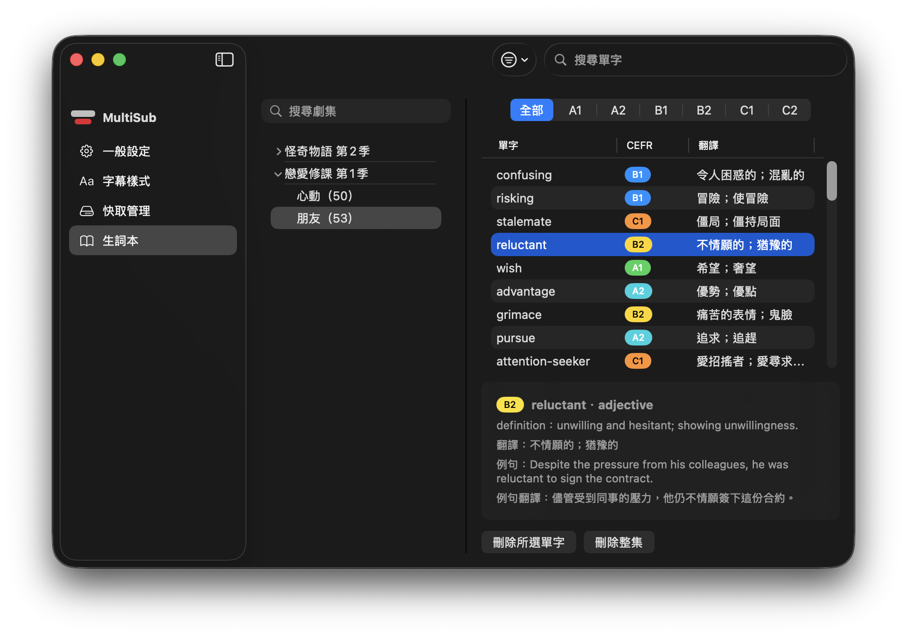

完全可自訂
第二字幕的字級、垂直位置、顏色、外框、字型、行高都能調；可直接在影片上拖曳定位，或切換雙語合併顯示。
macOS · Safari 擴充功能
擷取 Netflix 原生字幕，用完全在本機執行的 Gemma 模型翻譯成你設定的語言，以第二字幕疊加顯示。翻譯不經任何雲端 API。
Apple Silicon · macOS 15+ · 免費開源（MIT）
第二字幕的字級、垂直位置、顏色、外框、字型、行高都能調；可直接在影片上拖曳定位，或切換雙語合併顯示。
翻譯在你的 Apple Silicon 上以 MLX 執行，字幕與觀看內容不外傳，不需要任何雲端 API 或帳號。
把整集字幕中的單字依 CEFR 等級整理成可複習的生詞表，依劇集分組，是內建的英文學習工具。
點一下 Safari 工具列的 MultiSub 圖示，就能開關、挑翻譯語言、即時調整第二字幕的大小與位置，或開啟拖曳定位與雙語合併模式——全部在一個小面板裡完成。

一鍵把整集字幕裡的單字整理成生詞表——自動標上 CEFR 等級、依劇集分組，每個字附定義、翻譯與例句，隨時回來複習。
在 Mac 上，只有 Safari 能播放 Netflix 的最高畫質（最高 4K HDR）；Chrome 與 Firefox 受播放保護機制限制，畫質最高只到 720p。既然最好的畫質在 Safari，最好的雙語學習體驗也該在這裡——所以 MultiSub 只為 Safari 打造。
翻譯完全在本機執行，字幕與觀看資料不外傳。
如實揭露唯二的對外連線：首次使用會從 Hugging Face 下載模型權重（一次性）；App 的「檢查更新」會連線 GitHub Releases 公開 API 比對版本。除這兩者外，MultiSub 不進行任何其他網路連線。